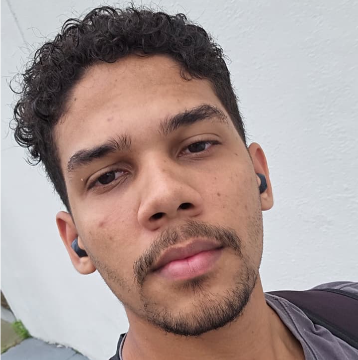

Luis Neto
Desenvolvedor Front-end no Programa Trilhas
Sobre mim
Sou um desenvolvedor front-end apaixonado e entusiasta de tecnologia em diversos campos, como inovações de hardware, automação, IA. Participei da primeira turma do Jovem Tech, programa da colaboração do Grupo Mateus, Porto do Itaqui e Governo do Maranhão, onde aprendir muito sobre desenvolvimento, venda de produtos para stackholders, e diversas outras soft-skils. Atualmante estou participando do programa Trilhas 3.